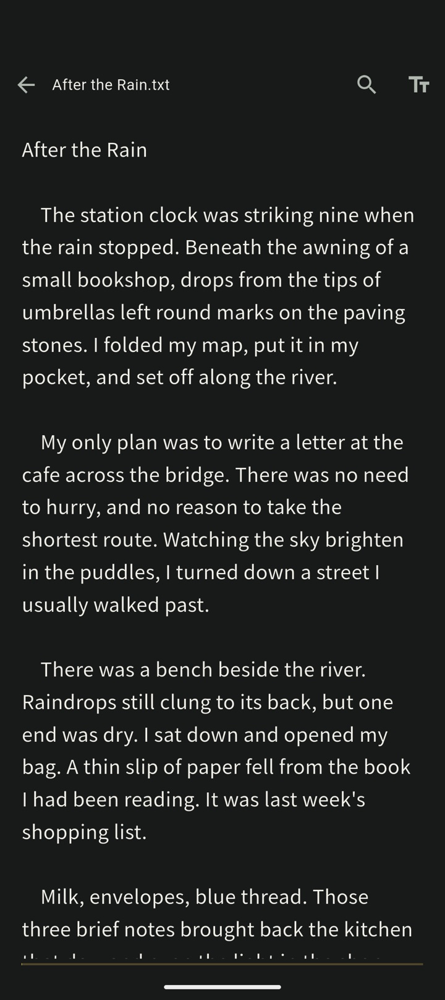
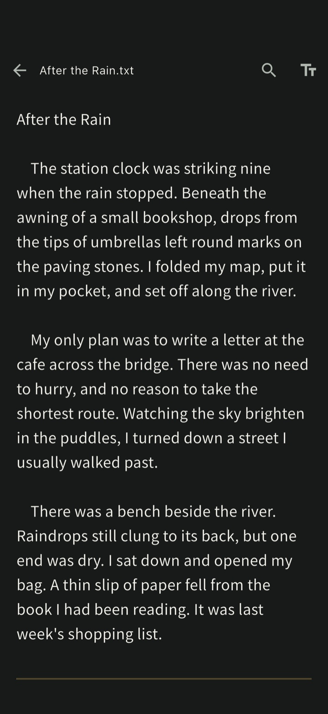
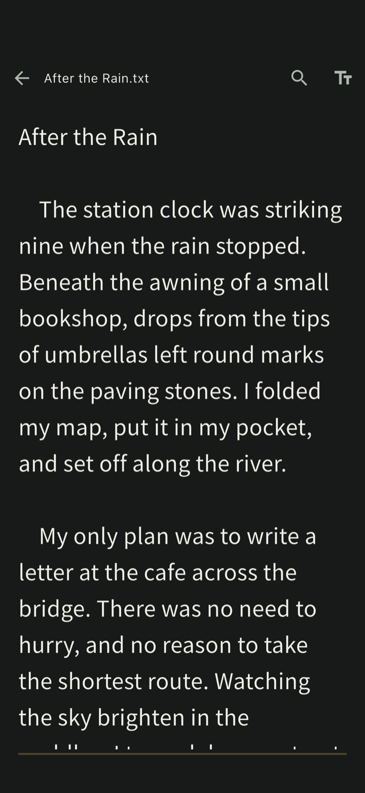
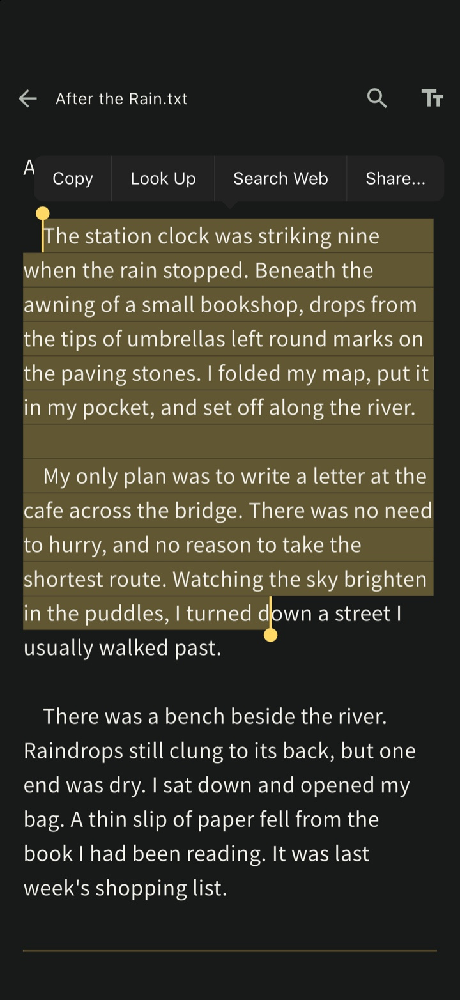
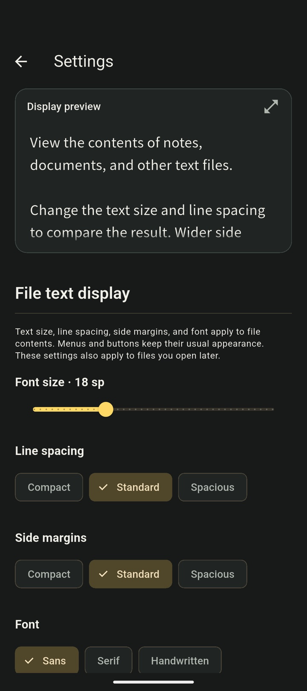
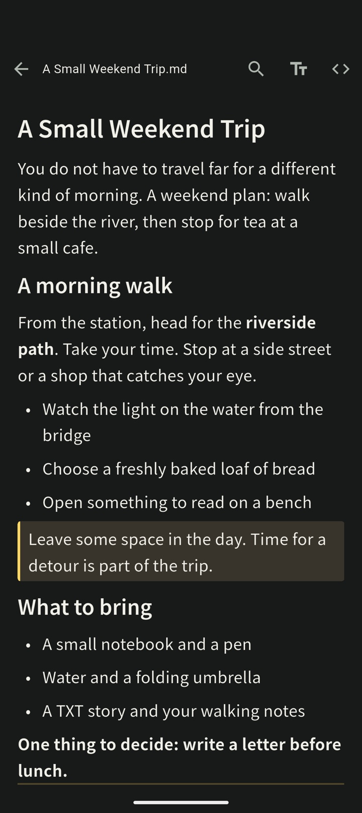
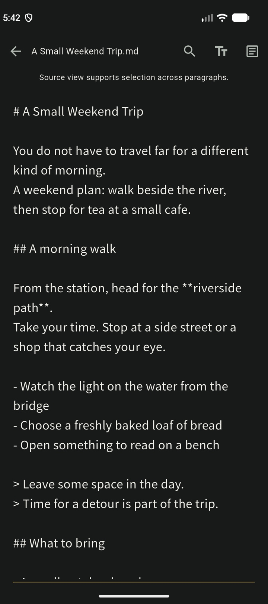
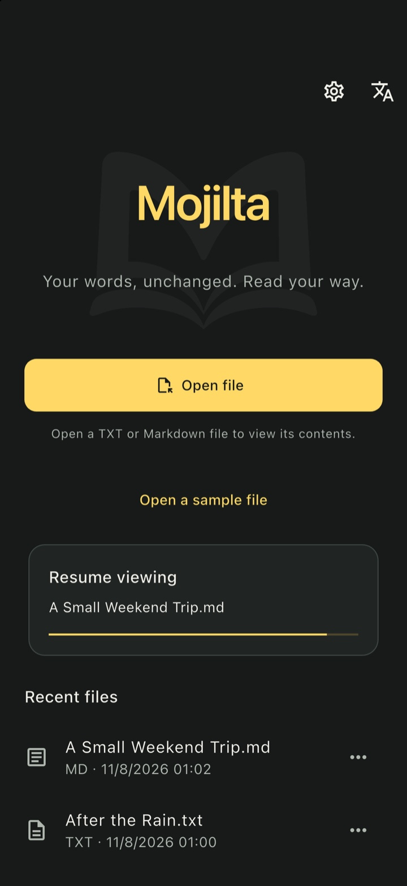

TXT / Markdown reader
Your words, unchanged.
Read your way.
TXT and Markdown,
Pinch to resize the text. Copy the paragraphs you need. Mojilta is a read-only reader that keeps your original files unchanged.
See how it works- Original files unchanged
- No sign-up required

Open a file on your phone and start reading.
.txt.md.markdown
01 Text size
Pinch to find
your reading size.
Spread or bring together two fingers to change the text size. Lines reflow to fit, so you can adjust the view as you read.
These still images show the same TXT document at 18sp and 24sp.


02 Select and copy
Select across paragraphs.
Copy what you need.
Long-press in a TXT document and select a range. You can copy text across several paragraphs in one go.
Read through a draft from your computer while you are out. Copy a passage you want to revisit and paste it into your usual notes app.
To copy across blocks in Markdown, switch to the read-only source view.
See Markdown views
03 Display
Choose your font,
spacing and margins.
Read a draft in a serif font. Give a story a little more line spacing. Use the sample in settings to find the view that suits you.
- Font
- Sans, Serif or Handwritten
- Spacing and margins
- Three options for each
- Appearance
- Dark, Light or System
Your choices also apply to files you open later. You can check them in a full-screen preview before opening a file.

04 Markdown
A formatted view.
The original source.
Read notes with headings and lists in the formatted view. Switch to the read-only source when you want to copy the text with its Markdown syntax.
Use source view to select and copy across blocks. Neither view changes your original file.


05 Resume from history
Pick up
where you left off.
Close a long TXT document partway through. Open it from your recent files to return to roughly where you were reading.
Looking for a word? Search within the file and move between matches to find the passage you want to read again.
Resuming requires continued access to the file. You may need to select it again if it was moved or deleted, access changed, or access was temporary.

YOUR FILES, ON YOUR PHONE
Your files,
read on your phone.
After purchase, downloaded TXT and Markdown files can be read offline on a device with a confirmed purchase status. No Mojilta account is required.
Mojilta does not upload your text to its own server or sync documents to the cloud. Buying, first-time purchase verification and restoring purchases require an internet connection. Cloud files that have not been downloaded and external links you open may also need a connection.
06 Pricing and purchase
Try a sample.
Buy once.
Download for free and try the TXT and Markdown samples and display settings. Make a one-time purchase of Mojilta when you are ready to open your own files.
Preparing for release on the app stores.
Read your own TXT and Markdown files
One-time¥480
No monthly fees or automatic renewal.
No Mojilta account is required.
Price for Japan. Check the price shown by your store before purchasing.
- Before purchase
- Read the TXT and Markdown samples. Try different fonts, text sizes, line spacing and margins.
- After purchase
- Open your own TXT and Markdown files, search and copy text, and resume from history.
07 Formats and usage
Frequently asked questions
Can I try Mojilta before buying?
Yes. Download for free to read the TXT and Markdown samples and try the display settings. Opening your own files requires a one-time purchase, priced at ¥480 in Japan. There are no monthly fees or automatic renewals. See pricing and purchase details for more information.
Which files can I open?
Mojilta supports TXT (.txt) and Markdown (.md / .markdown), up to 8 MiB per file. PDF and EPUB are not supported. Use your device’s standard file picker to choose a file.
Will Mojilta change my original file?
No. Mojilta is read-only. Changing the text size or line spacing does not change the file’s contents. There are no controls to edit, overwrite, delete or rename the original file.
Can I copy text from Markdown?
Yes. To copy across Markdown blocks, switch to the read-only source view and select the text. In TXT documents, long-press to select and copy across paragraphs.
Does Mojilta support Japanese text encodings?
Mojilta supports UTF-8, with or without a BOM, and UTF-16 with a BOM. You can manually select the encoding to open Shift_JIS-family files. It does not automatically detect every encoding.
Are images in Markdown displayed?
Images are replaced with a placeholder icon. External links open in another app only when you tap them.
Why can’t I resume a file?
You need to select the file again if it was moved or deleted, permission was lost, or access was temporary. When continued access is available, history takes you back near your previous reading position. The formatted Markdown view restores an approximate position.
Do I need an account or an internet connection?
No Mojilta account or sign-in is required. Buying, first-time purchase verification and restoring purchases require an internet connection. Downloaded files can be read offline when your purchased access is saved on the device. A cloud file provider may require its own sign-in or a connection to download a file.
Where are my text and history stored?
Mojilta does not upload your text to its own server or sync documents to the cloud. Settings, recent-file information and reading positions are stored on your device. RevenueCat and your store process anonymous identifiers and purchase information to verify and restore purchases. Your text, file names and reading history are not sent to RevenueCat. See the Privacy policy for more information.
Mojilta